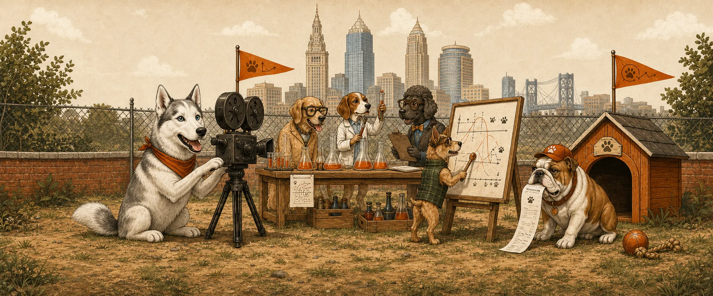
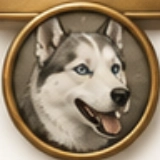

Welcome to the
Dawg Pound
Good ideas need room to run.A home for stories, experiments, and whatever we build next.
3 projects at playSwipe to explore →

The OG Data Dawg
Rollo
Ride or Die.
Play
HUSKY — RiFF RAFF · plays from YouTube
Music is not hosted here — it streams from YouTube's player: HUSKY by RiFF RAFF. Sound needs one tap to start; browsers block audio that starts on its own.
What Rollo represents
The tribute
Data Dawgs Confidence Calibration
DDCC Profile
Know how much you know.
Put a number on what you know.
Assign probabilities to factual claims, then see whether your confidence matches reality. Each 40-question run adds to a permanent calibration record.
This is a closed-book calibration experiment—not a personality test, intelligence test, rating, or leaderboard. Answers and sources stay sealed until the full session is complete.
One scale. No hedging.
- 0% means certainly false
- 50% means genuinely unsure
- 100% means certainly true
0Start
40Initial
100Developing
216Established
Checking your DDCC profile…
Body & training
SwoleDawg
Train. Recover. Measure. Keep the receipt.
The training log that remembers the work.
SwoleDawg keeps workouts, recovery, nutrition, and body measurements in one honest record. It is built to log what happened, show the trend, and leave the mythology at the door.
TRAINRECOVERMEASURENUTRITION
Open SwoleDawg